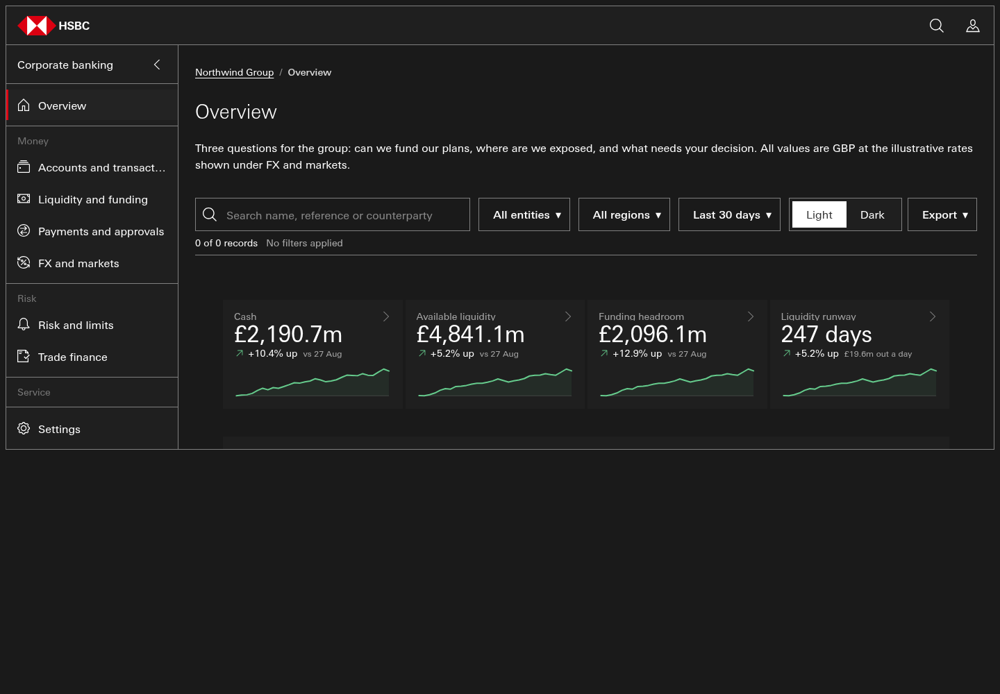

Apollo eval harness r4c-1.0 · #304 R4c · profile ceo-common
cand-r3 cold run · page notes/_lanes/304/R4c/cold/cand-r3/out/index.html · pack Apollo-Spider-v1.0.14-candidate.zip
mechanical total 9 / 12 geometry (4b) 1 / 3
The four-part rubric, measured
Visually rich
1
23 distinct Apollo components; 3 charts rendered with marks (3 types: donut, stacked-area, stacked-column); 3 clipped
LIBERAL-DATAVIZ prompt · 1: >=4 components or >=1 rendered chart · 2: >=8 comps, >=3 chart types, >=4 charts · 3: >=12 comps, >=5 types, >=8 charts, 0 clipped
Full
2
views live 10/10; KPI words 3/3; question words 2/3; largest record set 0 rows + pager; longest chart series 30 points → coverage 0.73
mean of the coverage parts: >=0.30 → 1, >=0.60 → 2, >=0.85 → 3
Persistent
3
survived reload: filter, nav, search (of changed: filter, nav, search; storage keys 3; url after <entry>#/overview?entity=NWG-UK&q=pay)
count of families {nav/view, filter, theme, sort, search} whose changed state survived a reload, capped at 3
Interactive
3
29/31 driven controls changed the page (94%); live families 8: detail, export, filter, form, link, other, search, theme; dead: none; page errors 0
1: >=30% live or >=2 families · 2: >=60% and >=5 families · 3: >=85%, >=8 families, 0 page errors
Composed or traced PARTLY TRACED nearest template Template-dashboard-bento , trace index 0.193
DOM shingle containment template text reused template-only classes present 0.038 0.048 (1 of 21 strings) 0.545 c-bento, c-bento__grid, c-bento__tile, tpl-group, tpl-group-context, tpl-group-evidence, tpl-group-lead, tpl-link
trace_index = 0.4*DOM shingle containment + 0.3*template text reuse + 0.3*template-only classes present; >=0.30 TRACED, >=0.15 PARTLY TRACED, else COMPOSED — calibrated on pages whose provenance the record states (7 bento-first splices read 0.334-0.561; 2 template-closed compositions read 0.041)
Theme — asked: common FAIL
root carries data-apollo-theme=common yes root carries class canon yes theme attrs not on <body> yes Common tokens resolve (--button-primary-background-default=#DB0011, --border-radius-default=0) yes no hex owned by another theme yes light/dark switch flips the theme, on <html> NO root class=True data-apollo-theme=common data-theme=lightraw hex in authored CSS 0
Charts against the ask
rendered 3 declared static 0 on overview 3 min overview asked 4 types rendered ['donut', 'stacked-area', 'stacked-column'] pack types available 14 types used frac 0.21 with legend 0 with table 3 subpages with charts 0 clipped charts [{'id': '', 'type': 'stacked-column', 'clip_by': 'div#shell-app.sh', 'clip_px': 309, 'page': None}, {'id': '', 'type': 'stacked-area', 'clip_by': 'div#shell-app.sh', 'clip_px': 1037, 'page': None}, {'id': 'ov-ccy-cd1', 'type': 'donut', 'clip_by': 'div#shell-app.sh', 'clip_px': 1471, 'page': None}] tooltips on hover {'charts_hovered': 3, 'tooltip_shown': 3}
Component variety — 23 distinct app-shell-side-nav, chart-bar, chart-boxplot, chart-bullet, chart-butterfly-h, chart-butterfly-v, chart-candlestick, chart-combo, chart-donut, chart-histogram, chart-line, chart-pie, chart-scatter, chart-stacked-area, data-grid, drawer, filter-toolbar-bar, kpi-tile, modals, stat-card, summary, tabs, toast
pages scored: 1 · APOLLO-DEMO markers copied: 0
Geometry and own size (4b's gates)
geometry FINDINGS score 1 · findings 9 knowledge/_validate_geometry.pyG8 major @1440 — 'Available liquidity' in a.kpi-link (clipped by p.kpi-lbl.t-cm-caption) G8 major @1440 — 'Funding headroom' in a.kpi-link (clipped by p.kpi-lbl.t-cm-caption) G8 major @1440 — 'Liquidity runway' in a.kpi-link (clipped by p.kpi-lbl.t-cm-caption) G8 major @390 — 'Available liquidity' in a.kpi-link (clipped by p.kpi-lbl.t-cm-caption) G8 major @390 — 'Funding headroom' in a.kpi-link (clipped by p.kpi-lbl.t-cm-caption) G8 major @390 — '2,096.1m' in span (clipped by section.c-bento__tile.c-bento) G8 major @390 — 'Liquidity runway' in a.kpi-link (clipped by p.kpi-lbl.t-cm-caption) G8 major @390 — '247 days' in span (clipped by section.c-bento__tile.c-bento) own_size FINDINGS score None · findings 16 knowledge/_validate_own_size.pyS1 None @1440 — None S1 None @1440 — None S1 None @1440 — None S1 None @1440 — None S1 None @1440 — None S1 None @1440 — None S1 None @1440 — None S1 None @1440 — None
Harness-native geometry signals (advisory, NOT 4b's score): {"dead_tiles": 0, "filter_table_mismatch": 1, "grids": 6, "own_size_hint": {"button_h_median": 19, "button_h_min": 17, "buttons": 30, "th": 52, "th_h_median": 30, "th_h_min": 18}, "unequal_gutter_grids": 0, "unshared_bottom_rows": 0}
Accessibility findings {"controls": 90, "duplicate_ids": 0, "h1": 1, "heading_skips": 1, "img_no_alt": 0, "landmarks": {"main": 1, "nav": 15}, "lang": "en-GB", "small_targets": 37, "unnamed_controls": 0}
pack gate: - a11y: ✅
The pack's own gates screen gate FAIL dataviz gate {'verdict': 'FAIL', 'charts': 17, 'blocking_n': 2, 'advisory_n': 0, 'blocking': [['donut', 'cd1', 'dv-004: donut is ENGINE-DRAWN but index.html is not mapped to a chart-engine test page (ENGINE_TEST_PAGE in this file). Add the mapping and drive it: python3 knowledge/_drive_chart_engine.py'], ['pie', 'cp1', 'dv-004: pie is ENGINE-DRAWN but index.html is not mapped to a chart-engine test page (ENGINE_TEST_PAGE in this file). Add the mapping and drive it: python3 knowledge/_drive_chart_engine.py']]}
- receipt: ❌ BEHAVIOUR-ADDRESS-DISAGREES- compose: ✅- composition: UNPROVEN: C9 bands- icon-source: ✅ all paths library-matched- a11y: ✅Render HSBC face: {'families': ['HSBC_MtUnivers_Latin', 'HSBC_MtUnivers_Latin Medium', 'HSBC_MtUnivers_Latin Thin'], 'hsbc': True, 'nodes': {"[class*='t-cm-']": ['HSBC_MtUnivers_Latin Medium'], 'body': [], 'button': [], 'h1': ['HSBC_MtUnivers_Latin Thin'], 'h2': ['HSBC_MtUnivers_Latin'], 'td': []}} · horizontal overflow: 0 px · page errors: 0 · console errors: 0 · clipped elements: 0 · sub-pages probed: 0

dark-1440 light-1440 Left to judgment — for Dave's eye, not scored Taste: does the page look like Apollo at its best — hierarchy, rhythm, restraint (Dave's eye on the light/dark shots). Alignment and spacing that the geometry signals cannot name (optical alignment, crowding, the 'sloppiness class' of #288). Whether each chart is the RIGHT chart for its figure (form-to-question fit), not only present and rendered. Data believability: realistic entities, currencies, FX and magnitudes for a CEO audience. Whether the overview actually answers the three CEO questions, as read by a person, not by keyword. Whether each workflow (approve, acknowledge, service request) is plausible end to end, beyond 'the DOM changed'. Composed vs traced is MEASURED as similarity; whether the composition is GOOD composition is judgment. Reproduce python3 notes/_lanes/304/R4c/harness/score.py static --run-id cold-cand-r3
python3 notes/_lanes/304/R4c/harness/score.py gates --run-id cold-cand-r3
python3 notes/_lanes/304/R4c/harness/score.py render --run-id cold-cand-r3
python3 notes/_lanes/304/R4c/harness/score.py drive --run-id cold-cand-r3
python3 notes/_lanes/304/R4c/harness/score.py ext --run-id cold-cand-r3
python3 notes/_lanes/304/R4c/harness/score.py card --run-id cold-cand-r3
page sha256 f45212c0689fa9a271dd5df3c2445e375b4fbedf5bac5fb305653fd5525656ff · pack sha256 2e82723788106d83033f72bc528905446b5b0b578a4c19447a7a90623551135d